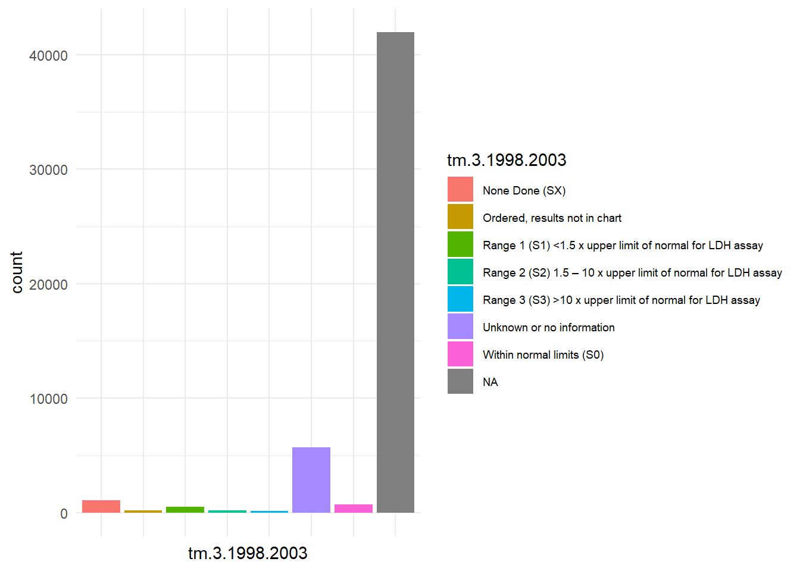

Code
library(dplyr)
library(ggplot2)
df <- read.csv("C:/data/testis.csv") # This data is a subset of our original data only inclusinf observations whose primary site was on their testicles.
df[df == "Blank(s)"] <- NAThe questions we aim to solve with our data are the following:
How does race affect survival rate/months survived for testi cancer?
How does survival rate/months change based on treatment options for testi cancer?
Has the survival rate of testi cancer increased/decreased over time?
library(dplyr)
library(ggplot2)
df <- read.csv("C:/data/testis.csv") # This data is a subset of our original data only inclusinf observations whose primary site was on their testicles.
df[df == "Blank(s)"] <- NA# Jhet's DM
df <- df %>%
mutate(
Sex = as.factor(Sex),
Scope.Reg.LN.Sur = as.factor(RX.Summ..Scope.Reg.LN.Sur..2003..),
Surg.Oth.Reg.Dis = as.factor(RX.Summ..Surg.Oth.Reg.Dis..2003..),
Surg.Rad.Seq = as.factor(ifelse(RX.Summ..Surg.Rad.Seq == "No radiation and/or cancer-directed surgery", "None", "Surg and or rad")),
Systemic.Sur.Seq = as.factor(RX.Summ..Systemic.Sur.Seq..2007..),
Months.diag.to.treat = ifelse(as.numeric(Months.from.diagnosis.to.treatment) == 0, "<1", "1+")
) %>% select(-c(3:12))#Chase's DM
df <- df %>%
mutate(tumor_size = as.numeric("CS Tumor Size/Ext Eval (2004-2015)"))# Frakie's DM
df <- select(df, -c('Number.of.Examined.Pelvic.Nodes.Recode..2010..':'Lymph.vascular.Invasion..2004..varying.by.schema.'))
names(df)[names(df) == "CS.tumor.size..2004.2015."] <- "CS_tumor_size"
names(df)[names(df) == "Regional.nodes.examined..1988.."] <- "Regional_node_examined"
names(df)[names(df) == "Regional.nodes.positive..1988.."] <- "Regional_positive_node"
names(df)[names(df) == "CS.lymph.nodes..2004.2015."] <- "CS_lymph_node"
names(df)[names(df) == "CS.mets.at.dx..2004.2015."] <- "CS_mets_dx"df$CS_tumor_size <- as.numeric(as.character(df$CS_tumor_size))
# Create the new variable 'tumor_size_mod' based on the conditions
df$tumor_size_mod <- ifelse(df$CS_tumor_size == 000, 0, # No mass/tumor
ifelse(df$CS_tumor_size >= 001 & df$CS_tumor_size <= 988, df$CS_tumor_size, # Exact size in mm
ifelse(df$CS_tumor_size == 989, 989, # 989 mm or larger
ifelse(df$CS_tumor_size == 990, 0.5, # Microscopic, no given size, assume 0.5mm as a placeholder
ifelse(df$CS_tumor_size == 991, 5, # Less than 1 cm, use 5mm as the midpoint
ifelse(df$CS_tumor_size == 992, 15, # Less than 2 cm, use 15mm as the midpoint
ifelse(df$CS_tumor_size == 993, 25, # Less than 3 cm, use 25mm as the midpoint
ifelse(df$CS_tumor_size == 994, 35, # Less than 4 cm, use 35mm as the midpoint
ifelse(df$CS_tumor_size == 995, 45, # Less than 5 cm, use 45mm as the midpoint
ifelse(df$CS_tumor_size >= 996 & df$CS_tumor_size <= 998, NA, # Site-specific codes, handle as NA or a specific rule if applicable
ifelse(df$CS_tumor_size == 999 | df$CS_tumor_size == 888 | df$CS_tumor_size == 1022, NA, # Unknown, Not applicable, or Blank, handle as NA
NA))))))))))) # Default case to catch any unhandled values#modifying regional nodes examined
# Step 1: Create a new numeric variable for the exact number of nodes examined
df$nodes_examined_num <- ifelse(df$Regional_node_examined >= 01 & df$Regional_node_examined <= 89, df$Regional_node_examined,
ifelse(df$Regional_node_examined == 90, 90, NA))
# Step 2: Create a new categorical variable for special conditions
df$nodes_examined_cat <- ifelse(df$Regional_node_examined == 00, "No nodes examined",
ifelse(df$Regional_node_examined == 95, "Aspiration performed",
ifelse(df$Regional_node_examined == 96, "Sampling, number unknown",
ifelse(df$Regional_node_examined == 97, "Dissection, number unknown",
ifelse(df$Regional_node_examined == 98, "Removed, number unknown",
ifelse(df$Regional_node_examined == 99, "Unknown",
ifelse(df$Regional_node_examined == 126, "Blank", "Exact number")))))))#modifying regional nodes positive
# Step 1: Numeric variable for the exact number of positive nodes
df$positive_nodes_num <- ifelse(df$Regional_positive_node >= 1 & df$Regional_positive_node <= 89, df$Regional_positive_node,
ifelse(df$Regional_positive_node == 90, 90, NA))
# Step 2: Categorical variable for special conditions
df$positive_nodes_cat <- ifelse(df$Regional_positive_node == 0, "All nodes negative",
ifelse(df$Regional_positive_node == 95, "Positive aspiration performed",
ifelse(df$Regional_positive_node == 97, "Positive, number unspecified",
ifelse(df$Regional_positive_node == 98, "No nodes examined",
ifelse(df$Regional_positive_node == 99, "Unknown",
ifelse(df$Regional_positive_node == 126, "Blank", NA)))))) # Using NA for 'Exact number positive' to keep only special conditions
# Optional: Convert the categorical variable into a factor for easier handling in certain types of analyses
df$positive_nodes_cat <- factor(df$positive_nodes_cat)#Saul's DM
df$`Age.recode.with.single.ages.and.90.` <- gsub(
" years","",df$`Age.recode.with.single.ages.and.90.`)
df <- df %>%
mutate(
age = as.numeric(`Age.recode.with.single.ages.and.90.`),
race = `Race.recode..W..B..AI..API.`,
survival.months = as.numeric(Survival.months),
marital.status.at.diagnosis = Marital.status.at.diagnosis,
situ.malignant.tumors = as.numeric(`Total.number.of.in.situ.malignant.tumors.for.patient`),
tm.3.1998.2003 = `Tumor.marker.3..1998.2003.`)
# Other recodes
df <- df %>% mutate(
situ.malignant.tumors = ifelse(situ.malignant.tumors == 1, "One tumor",
ifelse(situ.malignant.tumors > 1,
"More than one tumor", NA)),
tm.3.1998.2003 = recode(tm.3.1998.2003,
"0" = "None Done (SX)",
"2" = "Within normal limits (S0)",
"4" = "Range 1 (S1) <1.5 x upper limit of normal for LDH assay",
"5" = "Range 2 (S2) 1.5 – 10 x upper limit of normal for LDH assay",
"6" = "Range 3 (S3) >10 x upper limit of normal for LDH assay",
"8" = "Ordered, results not in chart",
"9" = "Unknown or no information",
"14" = " Blank")
)
df <- df %>% select(X, age,
race, survival.months,
marital.status.at.diagnosis,
situ.malignant.tumors,
tm.3.1998.2003,
Sex,
Scope.Reg.LN.Sur,
Surg.Oth.Reg.Dis,
Surg.Rad.Seq,
Systemic.Sur.Seq,
Months.diag.to.treat,CS_tumor_size,
Regional_node_examined,
Regional_positive_node,
CS_lymph_node,
CS_mets_dx,
tumor_size_mod,
nodes_examined_num,
Regional_node_examined,
nodes_examined_cat)summary(df) X age race survival.months
Min. : 1 Min. : 0.00 Length:50522 Min. : 0.0
1st Qu.:12631 1st Qu.:26.00 Class :character 1st Qu.: 37.0
Median :25262 Median :33.00 Mode :character Median : 95.0
Mean :25262 Mean :36.01 Mean :104.3
3rd Qu.:37892 3rd Qu.:43.00 3rd Qu.:166.0
Max. :50522 Max. :89.00 Max. :251.0
NA's :69 NA's :70
marital.status.at.diagnosis situ.malignant.tumors tm.3.1998.2003
Length:50522 Length:50522 Length:50522
Class :character Class :character Class :character
Mode :character Mode :character Mode :character
Sex Scope.Reg.LN.Sur
Male:50522 None :38710
4 or more regional lymph nodes removed : 3078
Unknown or not applicable : 801
1 to 3 regional lymph nodes removed : 593
Biopsy or aspiration of regional lymph node, NOS: 495
(Other) : 406
NA's : 6439
Surg.Oth.Reg.Dis
None; diagnosed at autopsy :42730
Non-primary surgical procedure to other regional sites : 377
Non-primary surgical procedure to distant site : 348
Non-primary surgical procedure to distant lymph node(s): 206
Non-primary surgical procedure performed : 182
(Other) : 240
NA's : 6439
Surg.Rad.Seq Systemic.Sur.Seq
None :41212 No systemic therapy and/or surgical procedures:22145
Surg and or rad: 9310 Systemic therapy after surgery :12038
Systemic therapy before surgery : 557
Systemic therapy both before and after surgery: 309
Surgery both before and after systemic therapy: 167
(Other) : 42
NA's :15264
Months.diag.to.treat CS_tumor_size Regional_node_examined
Length:50522 Min. : 0.0 Min. : 0.000
Class :character 1st Qu.: 25.0 1st Qu.: 0.000
Mode :character Median : 43.0 Median : 0.000
Mean :154.9 Mean : 9.834
3rd Qu.: 70.0 3rd Qu.: 0.000
Max. :999.0 Max. :99.000
NA's :21888
Regional_positive_node CS_lymph_node CS_mets_dx tumor_size_mod
Min. : 0.0 Length:50522 Length:50522 Min. : 0.0
1st Qu.:98.0 Class :character Class :character 1st Qu.: 25.0
Median :98.0 Mode :character Mode :character Median : 40.0
Mean :88.8 Mean : 81.8
3rd Qu.:98.0 3rd Qu.: 60.0
Max. :99.0 Max. :989.0
NA's :24093
nodes_examined_num nodes_examined_cat
Min. : 1.00 Length:50522
1st Qu.: 6.00 Class :character
Median :17.00 Mode :character
Mean :21.07
3rd Qu.:30.00
Max. :90.00
NA's :46157 Because many of the variables are categorical now, statistics such as mean, median, and standard deviation are not applicable.
Instead, we can see the frequency distributions above in count form, as well as visualized below.
#50522 rows
ggplot(df, aes(x=Scope.Reg.LN.Sur)) +
geom_bar(aes(fill=Scope.Reg.LN.Sur)) +
theme(axis.text.x=element_blank(),
legend.text=element_text(size=6))This variable contains data relating to the scope of surgery done to regional lymph nodes. Most of the cases are “none”, meaning no surgery was done. Besides NA, the next highest number of observations is in the 4+ lymph nodes removed category, followed by 1-3.
From this we can discern that removal of lymph nodes is uncommon, but becomes more necessary the more positive nodes there are.
ggplot(df, aes(x=Surg.Oth.Reg.Dis)) +
geom_bar(aes(fill=Surg.Oth.Reg.Dis)) +
theme(axis.text.x=element_blank(),
legend.text=element_text(size=6))Surg.Oth.Reg.Dis stands for “surgery to other distant regions”, and over ~42,000 out of 50,000 observations are in the “none/diagnosed at autopsy” category.
Another 6000 of the remaining 8000 are NA’s, meaning the variable contains little meaningful data for our investigations.
table(df$RX.Summ..Surg.Rad.Seq)< table of extent 0 >ggplot(df, aes(x=Surg.Rad.Seq)) +
geom_bar(aes(fill=Surg.Rad.Seq)) +
theme(axis.text.x=element_blank(),
legend.text=element_text(size=6))The categories in this variable originally contained the order of surgery and or radiation. However, ~40,000 were again contained in the No surgery category.
Thus, the variable is collapsed into just two levels, one in which no surgery or radiation was used, and another where one or both were used.
ggplot(df, aes(x=Systemic.Sur.Seq)) +
geom_bar(aes(fill=Systemic.Sur.Seq)) +
theme(axis.text.x=element_blank(),
legend.text=element_text(size=6))Similar to the previous variable, this one contains data involving the sequence of systemic surgery and therapy. Most of the observations are in the none level, another large portion are patients that got systemic therapy after surgery, and another large chunk is NA’s.
The presence of two substantial categories makes this a useful variable for our treatment related data science question.
table(as.numeric(df$Months.from.diagnosis.to.treatment))< table of extent 0 >ggplot(df, aes(x=Months.diag.to.treat)) +
geom_bar(aes(fill=Months.diag.to.treat))Just like the Surg.Rad.Seq variable, almost all of the patients recieved treatment within 1 month of their diagnosis.
Thus, the only way for the variable to be of any use is to make it binary, where one category is treatment within a month, and the other is one month or more.
unique(df$CS_tumor_size) [1] NA 25 15 20 70 988 65 90 9 27 66 45 39 999 75 30 160 60
[19] 35 42 18 80 12 92 23 50 55 28 43 85 26 10 40 52 100 4
[37] 67 54 0 21 22 16 11 8 34 13 47 38 110 37 68 48 36 104
[55] 56 24 32 17 19 7 62 58 57 6 63 73 78 989 2 130 72 44
[73] 120 46 53 170 94 31 49 95 5 118 128 145 61 33 29 115 76 41
[91] 81 150 59 109 89 84 83 69 77 135 140 670 14 520 64 51 105 125
[109] 102 195 123 3 161 71 280 74 82 112 88 87 993 93 98 992 994 180
[127] 96 1 97 124 226 650 86 250 420 152 205 320 79 114 108 990 103 260
[145] 158 107 210 119 239 91 132 99 270 146 111 920 129 122 450 121 200 550
[163] 888 155 113 117 700 137 101 151 220 165 116 133 190 127 400 162 181 141
[181] 800 185 188 215 390 189 950 230 470 177 995 580 620 138 350 142 157 991
[199] 106 255 126 271 139 263 134 225 172 148 202 174 690 411 156 168 164 175
[217] 201 131 780 600 720 187 154 204 193 300 560summary(df$CS_tumor_size, na.rm = TRUE) Min. 1st Qu. Median Mean 3rd Qu. Max. NA's
0.0 25.0 43.0 154.9 70.0 999.0 21888 sd(df$CS_tumor_size, na.rm = TRUE)[1] 305.4416ggplot(data = df, aes(x = CS_tumor_size))+
geom_histogram(fill="blue",color="white")+
labs(x='Tumor Size', y='Frequency', title = 'Tumor Size Histogram')#Numerical variable of nodes examined
summary(df$nodes_examined_num) Min. 1st Qu. Median Mean 3rd Qu. Max. NA's
1.00 6.00 17.00 21.07 30.00 90.00 46157 #Categorical varailable for nodes examined
table(df$nodes_examined_cat)
Aspiration performed Dissection, number unknown
579 326
Exact number No nodes examined
4365 42032
Removed, number unknown Sampling, number unknown
508 17
Unknown
2695 #positive nodes numerical variable
summary(df$positive_nodes_num)Length Class Mode
0 NULL NULL #categorical nodes numerical variable
table(df$positive_nodes_cat)< table of extent 0 ># Checking distributions for variables
ggplot(df) +
geom_histogram(aes(x = age))ggplot(df) +
geom_bar(aes(x = race))The vast majority of individuals with a tumor in their testis are white. We checked the overall demographics of the seer data and found it was primarily white. Because we do not have access to the counties in which the individuals reported from, it is difficult to gauge whether this is an issue or not.
ggplot(df) +
geom_histogram(aes(x = survival.months))ggplot(df, aes(x = marital.status.at.diagnosis, fill = marital.status.at.diagnosis)) +
geom_bar() +
theme_minimal() +
theme(axis.text.x = element_blank(),
legend.text = element_text(size = 7))Most patients were either married, or single (never married)
ggplot(df) +
geom_bar(aes(x = situ.malignant.tumors))Changed to binary (One tumor or More than one tumor)
ggplot(df, aes(x = tm.3.1998.2003, fill = tm.3.1998.2003)) +
geom_bar() +
theme_minimal() +
theme(axis.text.x = element_blank(),
legend.text = element_text(size = 7))
Tons of ‘NA’ values in tumor marker variables, probably in part do them not spanning all years.